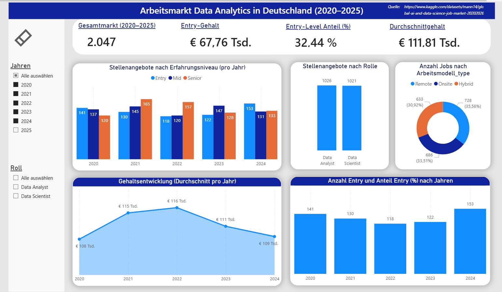

Hi, ich bin Maria !
ich mache Daten verständlich.
Als Data Analyst unterstütze ich Unternehmen dabei, ihre Daten zu verstehen und daraus klare Insights abzuleiten — für bessere Entscheidungen und optimierte Prozesse.
Kurzprofil
Skills & Tools
Analytischer Ansatz
Datenverständnis
Analyse der Datenstruktur sowie der zugrundeliegenden Fragestellung, um Kontext, Relevanz und mögliche Einschränkungen zu verstehen.
Datenaufbereitung
Bereinigung, Strukturierung und Validierung der Daten, um eine konsistente und zuverlässige Grundlage für die weitere Analyse zu schaffen.
Explorative Analyse
Identifikation von Mustern, Trends und Auffälligkeiten durch explorative Analyse und erste Visualisierungen.
Visualisierung & Interpretation
Darstellung der Ergebnisse durch klare Visualisierungen zur Unterstützung datenbasierter Entscheidungen.
Projekte
Arbeitsmarktanalyse — Data Analyst Deutschland
Analyse von Gehaltsentwicklung, Erfahrungsstufen und Unternehmensmerkmalen im deutschen Arbeitsmarkt von 2020 bis 2025.
